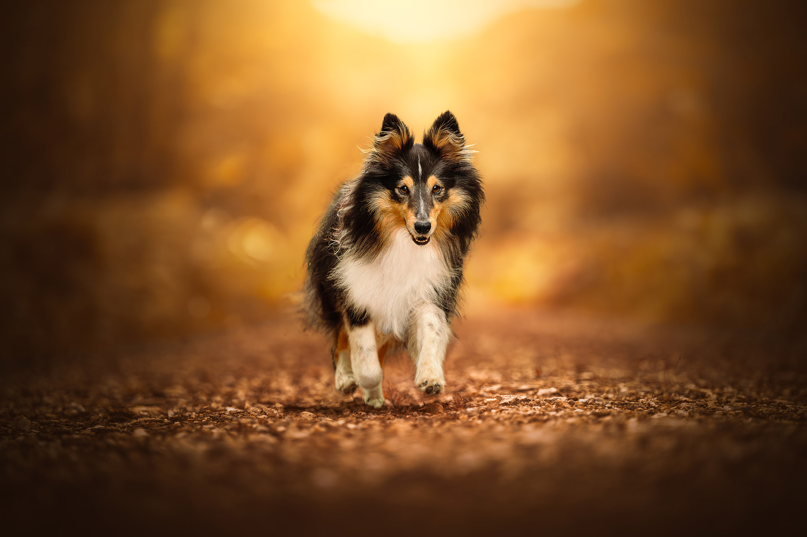

Une séance pensée pour vous
Votre animal
au cœur du projet
Chaque séance est une expérience unique et personnalisée. Je prends le temps de comprendre votre histoire, votre projet et surtout VOTRE animal, pour capturer des instants vrais qui lui ressemblent.
Découvrir les séances